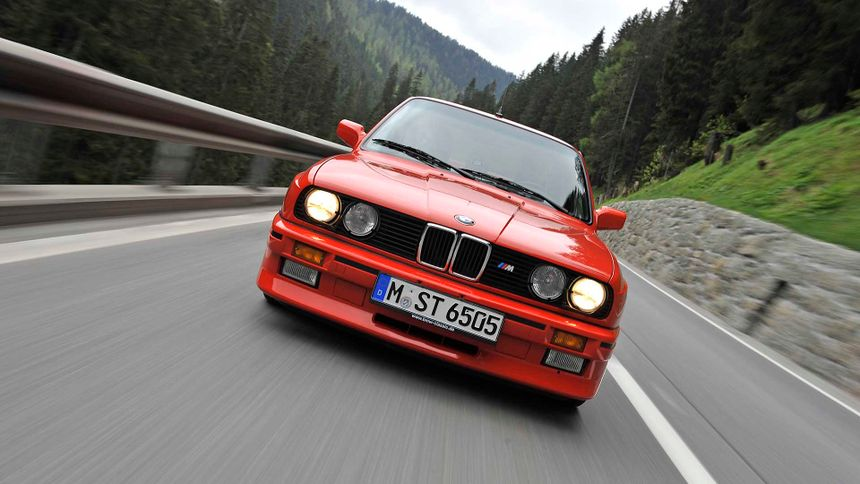
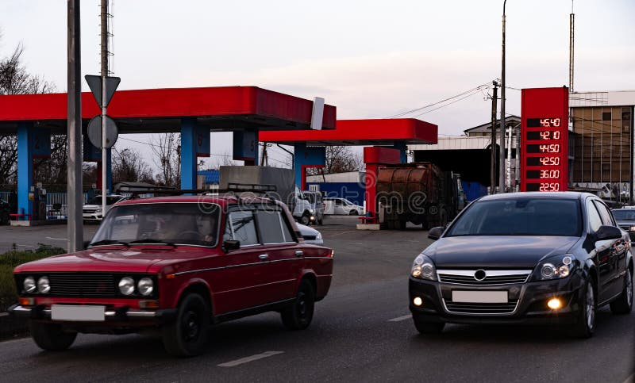
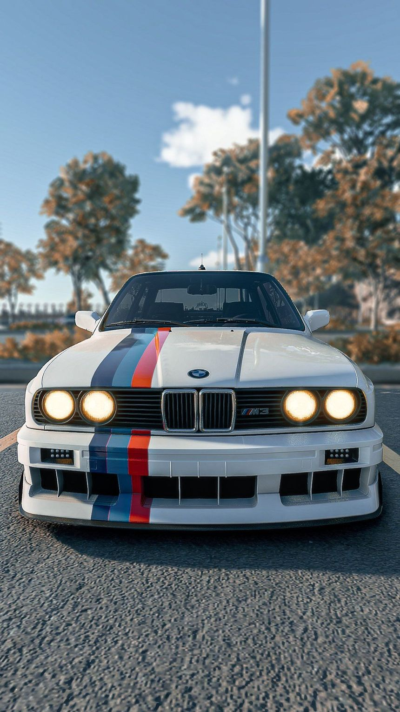

Premium German Luxury Cars Collection
Unmatched engineering from Mercedes, BMW, Audi, Porsche – luxury, performance, and prestige.
  Old vs New German Luxury Models
| Category | Brand | Model | Price | Location | Year | Engine | Color |
|---|---|---|---|---|---|---|---|
| Old / Removed | BMW | 750Li | $120,000 | Berlin | 2020 | V8 | Black |
| New / Featured | BMW | X7 | $100,000 | Hamburg | 2022 | V6 | Blue |
Model Highlights & Quotes
"The Mercedes-Maybach S-Class offers supreme luxury and comfort."
- Mercedes: Maybach S-Class, AMG GT